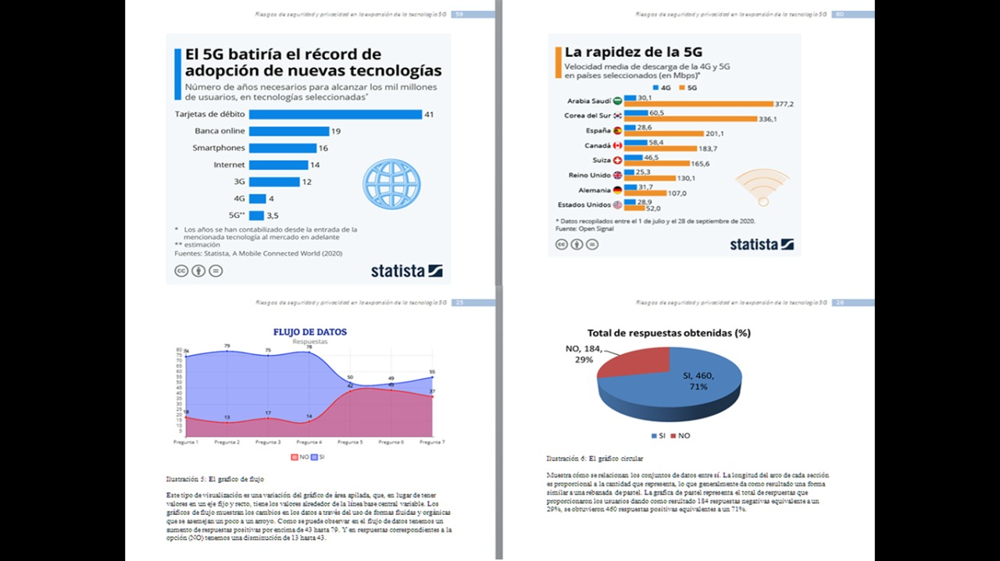

Investigación - SERVICIOS INALÁMBRICOS
Investigación - SERVICIOS INALÁMBRICOS: RIESGOS DE SEGURIDAD Y PRIVACIDAD QUE PUEDEN PRESENTARSE EN LA EXPANSIÓN DE LAS TECNOLOGÍAS 5G.
Investigación para analizar el desarrollo de los servicios inalámbricos de tecnologías 5G y los riesgos para la privacidad y seguridad de los usuarios, así mismo explorar la influencia, beneficios, cómo se implementarán los servicios de tecnología 5G, consecuencias y riesgos de esta nueva tecnología y como se está trabajando en el área de la ciberseguridad.
- Objetivo: Darle a conocer a las personas los beneficios que tiene las tecnologías 5G, así como las desventajas y problemas de salud que se presentan según estudios que se tienen a la fecha de esta tecnología.
- Descripción del proceso de trabajo: Se estableció un horario para los miembros del equipo para poder realizar los diferentes avances al proyecto.
- Rol y responsabilidades: Mi rol en el proyecto fue el de investigador, y responsabilidad fue proporcionar la información recopilada a los editores del equipo.